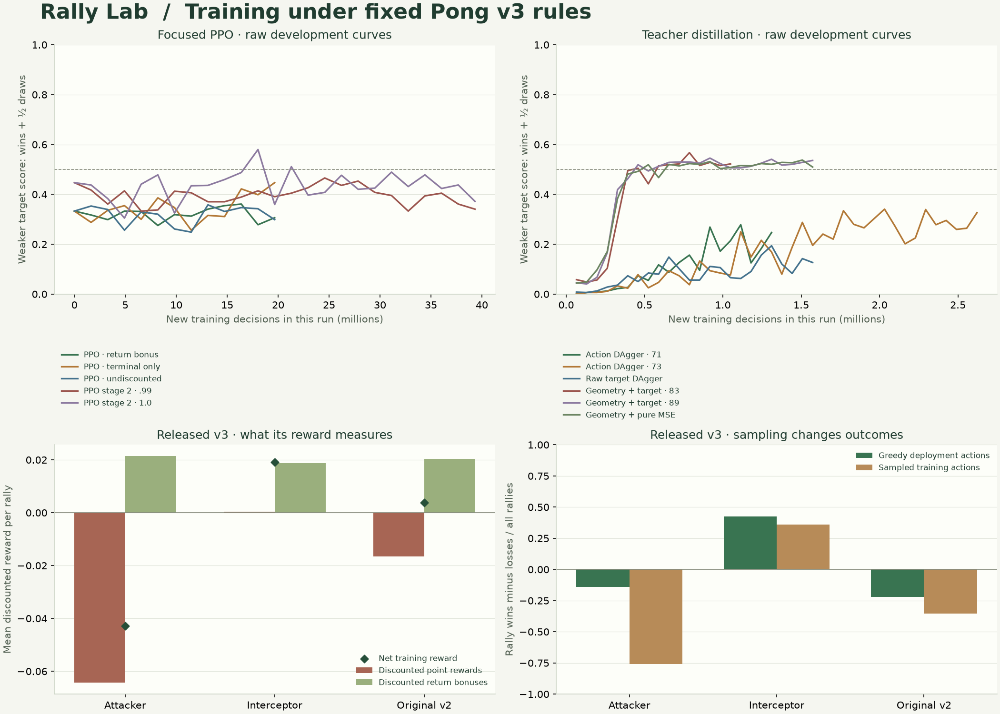

Archived: ineligible for dense-only play
This historical study used physics features or planning operations inside its ONNX graph. Those models do not meet the current plain dense-network contract and have been removed from the active catalog. Downloads and scores below are retained as historical evidence under the former graph contract; they are not active dense-network standings.
PONG V3 · TRAINING INVESTIGATION
Train for the contest
we actually care about.
Physics, observations and termination rules stay fixed
The goal is explicit: beat both original Selfplay v2 and the unchanged scripted attacker. We first measured why the previous training objective could reward unhelpful behavior, then tested focused reinforcement learning and teacher distillation. Failed experiments remain part of the record.
11Recorded training runs
147.32MNew training decisions across these runs
2 targetsOriginal v2 and scripted attacker
3 / 3Fresh final blocks evaluated
Result of the investigation
The selected export passes the predeclared criteria against both targets in all three fresh blocks.
Strategist · Fixed ReLU trajectory features from the original six inputs; learned 8→128→128→64→1 Tanh target head; fixed linear paddle feedback emits up/stay/down scores. Selected before final testing. Of three candidates compared on the same 128 fresh development seeds, this export had the highest weaker-target score, no rally losses to either target, and the highest paired match win rate against the attacker (111/128). All final seeds were untouched.
Frozen, hand-designed trajectory features and fixed paddle feedback are embedded alongside the PyTorch-trained target head. This is a hybrid model, not a network that discovered all geometry from raw inputs. The frozen feature layers compute next-contact landing position and flight time from the original six observations. The learned head predicts a paddle target; fixed feedback converts its error into the three action scores. All inference stays inside the standalone ONNX graph.
25,985 learned parameters · 48,063 total parameters including fixed weights · 45,152 multiply-accumulates · 208,140 bytes. The teacher supplies training targets; it does not run beside the submitted model.
Download the standalone ONNX weights (retired)
| Opponent | All final rallies W / L / D | Rally draw rate | Five-rally games W / L / D | Paired matches W / L / D | Paired match win rate |
|---|
| Original Selfplay v2 | 2917 / 1 / 3082 | 51.4% | 1153 / 0 / 47 | 600 / 0 / 0 | 100.0% |
| Scripted attacker | 790 / 1 / 5209 | 86.8% | 625 / 1 / 574 | 474 / 1 / 125 | 79.0% |
1 frozen candidate was tested on these reserved blocks. The three blocks are confirmation of one chosen export, not three independent training runs. Rally draws are not wins: a model can win a paired ten-rally match by taking a few points while drawing the rest. The draw rate therefore matters alongside match wins. Paired matches combine both side assignments on the same five serves.
| Block | Opponent | Rally W / L / D | Loop draws | Timeout draws | Paired matches W / L / D | Left W/L · right W/L | Point-margin 95% interval | Protocol |
|---|
| holdout-1 | Original Selfplay v2 | 1003 / 0 / 997 | 844 | 153 | 200 / 0 / 0 | 516/0 · 487/0 | +47.9…+52.4 pp | Pass |
| holdout-1 | Scripted attacker | 275 / 0 / 1725 | 1725 | 0 | 157 / 0 / 43 | 145/0 · 130/0 | +12.4…+15.2 pp | Pass |
| holdout-1 | Interceptor | 825 / 0 / 1175 | 1175 | 0 | 190 / 0 / 10 | 403/0 · 422/0 | +38.6…+43.9 pp | Guardrail |
| holdout-2 | Original Selfplay v2 | 955 / 1 / 1044 | 904 | 140 | 200 / 0 / 0 | 481/0 · 474/1 | +45.0…+50.2 pp | Pass |
| holdout-2 | Scripted attacker | 259 / 1 / 1740 | 1740 | 0 | 157 / 1 / 42 | 128/0 · 131/1 | +11.6…+14.2 pp | Pass |
| holdout-2 | Interceptor | 906 / 1 / 1093 | 1093 | 0 | 196 / 0 / 4 | 453/0 · 453/1 | +42.5…+48.0 pp | Guardrail |
| holdout-3 | Original Selfplay v2 | 959 / 0 / 1041 | 867 | 174 | 200 / 0 / 0 | 494/0 · 465/0 | +46.0…+49.8 pp | Pass |
| holdout-3 | Scripted attacker | 256 / 0 / 1744 | 1744 | 0 | 160 / 0 / 40 | 126/0 · 130/0 | +11.6…+14.2 pp | Pass |
| holdout-3 | Interceptor | 877 / 0 / 1123 | 1123 | 0 | 196 / 0 / 4 | 447/0 · 430/0 | +41.1…+46.6 pp | Guardrail |
The interceptor is reported as a guardrail, separately from the two primary targets. Pooled counts are descriptive; acceptance is checked independently in each block.
Why v3 regressed
The original v2 actor was absent from the training and validation opponent pool. Checkpoint selection averaged five opponents equally, three of them easier baselines. This was a different objective from consistently beating both requested targets.
| Frozen policy | Attacker W / L / D | Interceptor W / L / D | Original v2 W / L / D |
|---|
| Released v2 | 110 / 406 / 484 | 830 / 65 / 105 | 309 / 309 / 382 |
| v3 seed 7 | 105 / 436 / 459 | 581 / 121 / 298 | 349 / 372 / 279 |
| v3 seed 17 | 87 / 487 / 426 | 788 / 52 / 160 | 296 / 400 / 304 |
| Released v3 · seed 29 | 192 / 334 / 474 | 454 / 31 / 515 | 191 / 412 / 397 |
These diagnostics use 100 dispersed development seeds, five serves and both sides: 1,000 rallies per row/opponent. They are not the new candidate’s final tests.
A positive training reward can accompany losing play
With the old discount of .99, a point 400 ticks away carries only 1.795% of an immediate reward’s weight. For released v3 against v2, full-horizon greedy play loses more rallies than it wins, yet its mean discounted training reward is +0.003826: point rewards contribute -0.016582, while return bonuses contribute +0.020409.
The sampled training policy also behaves differently from the deterministic browser policy. These are measured mismatches, not proof that any single change must fix learning. Greedy loop shortcuts preserve the same point outcomes as continuing the tested greedy games to the deadline, so loop detection itself does not explain the score regression.
A separate league-maintenance defect switched some opponents mid-rally after update 125. The released v3 checkpoint was update 100, so that later defect cannot explain its regression. The focused trainer keeps opponent assignments fixed until each rally ends.
What we tried
The curves below show raw development measurements. The score is the weaker of the two targets’ (wins + half draws) / rallies; .5 means zero net point advantage, not satisfaction of the full competition criterion. PPO and distillation use different fixed development seed sets, so their plotted scores are not a matched-test ranking.

| Run | New decisions | Best weaker-target score | Best v2 W / L / D | Best attacker W / L / D | Interpretation |
|---|
| PPO · return bonus | 19,660,800 | 0.361 | 73 / 34 / 213 | 23 / 112 / 185 | Gamma .99; return bonus .02; v2 warm start. |
| PPO · terminal only | 19,660,800 | 0.447 | 71 / 31 / 218 | 10 / 44 / 266 | Gamma .99; no return bonus; v2 warm start. |
| PPO · undiscounted | 19,660,800 | 0.358 | 98 / 57 / 165 | 18 / 109 / 193 | Gamma 1; no return bonus; v2 warm start. |
| PPO stage 2 · .99 | 39,321,600 | 0.466 | 126 / 27 / 167 | 11 / 33 / 276 | 600 more updates from terminal-only stage 1; fresh critic/optimizer. |
| PPO stage 2 · 1.0 | 39,321,600 | 0.580 | 129 / 44 / 147 | 74 / 23 / 223 | 600 more updates from terminal-only stage 1; best update 275 passed shared development comparison, not final tested. |
| Action DAgger · 71 | 1,310,720 | 0.278 | 90 / 132 / 98 | 56 / 198 / 66 | Raw six inputs; failed to beat both targets. |
| Action DAgger · 73 | 2,621,440 | 0.341 | 49 / 112 / 159 | 13 / 115 / 192 | Longer raw-input action imitation; failed to beat both targets. |
| Raw target DAgger | 1,572,864 | 0.194 | 69 / 207 / 44 | 10 / 206 / 104 | Raw six inputs; target regression plus CE; failed to beat both targets. |
| Geometry + target · 83 | 1,048,576 | 0.567 | 149 / 0 / 171 | 43 / 0 / 277 | Selected round 12. Intended 24 rounds; interrupted after 16 to investigate pure MSE. Original24-round learning-rate schedule retained. |
| Geometry + target · 89 | 1,572,864 | 0.545 | 113 / 19 / 188 | 29 / 0 / 291 | 24 completed rounds; selected 14; behind seed 83 in shared development test. |
| Geometry + pure MSE | 1,572,864 | 0.537 | 144 / 0 / 176 | 24 / 0 / 296 | 24 completed rounds; better target precision did not improve competition score. |
Each row shows that run’s best recorded development checkpoint by weaker-target score, breaking ties by mean target score. Continued stages count only their additional decisions. Values are unsmoothed; failed variants are included. Teacher-derived policies must still fit standalone neural weights and the existing browser graph contract.
Choosing one candidate before final tests
The finalists below played the same 128 fresh development seeds, with both sides and all five serves. This comparison includes the strongest focused PPO candidate as well as two geometry-assisted target models. These data were used for selection and are not held-out evidence. Raw-input action imitation and raw-input target regression remain visible above as unsuccessful alternatives.
| Candidate | Opponent | Rally W / L / D | Paired matches W / L / D | Score including half draws |
|---|
| focus-outcome-stage2-s73 | Original Selfplay v2 | 522 / 130 / 628 | 118 / 3 / 7 | 0.653 |
| focus-outcome-stage2-s73 | Scripted attacker | 231 / 81 / 968 | 85 / 18 / 25 | 0.559 |
| target-feature-83 | Original Selfplay v2 | 609 / 0 / 671 | 128 / 0 / 0 | 0.738 |
| target-feature-83 | Scripted attacker | 175 / 0 / 1105 | 111 / 0 / 17 | 0.568 |
| target-feature-89 | Original Selfplay v2 | 458 / 54 / 768 | 120 / 1 / 7 | 0.658 |
| target-feature-89 | Scripted attacker | 89 / 0 / 1191 | 73 / 0 / 55 | 0.535 |
The selected method learns a target from a minimax recovery teacher while progressively collecting the learner’s own states. The feature-assisted variants add exact game geometry as fixed neural layers. Their improvement cannot be attributed to more training alone: architecture and prior knowledge also changed. Lower target-prediction error alone did not select the best competitor.
What counts as consistent improvement?
The protocol reserves three disjoint blocks of 200 dispersed seeds each before final model evaluation. Every candidate faces all five serves from both physical sides. In every block, against both targets, it must win more than half the paired ten-rally matches including draws in the denominator, have a strictly positive lower endpoint of the seed-cluster 95% point-margin interval, and win more rallies than it loses on each physical side.
Uncertainty is estimated by resampling whole seeds, keeping their two sides and ten rallies together. The interval is not based on treating mirrored rallies as independent samples. These empirical thresholds do not prove optimal play or provide a family-wise statistical guarantee.
Final testing uses the actual exported ONNX candidate and original v2 ONNX file, deterministic first argmax, unchanged attacker code and the existing v3 loop/timeout rules. Checkpoint selection and tuning must finish before these outcomes are seen.
Reproduce and inspect
The frozen protocol, seed lists, run records and release manifest are in training/results/training-improvement/. The independent diagnosis is in training/results/training-diagnosis/. Run .venv/bin/python training/scripts/improvement_report.py to rebuild this page from the recorded data. Earlier v1/v2/v3 reports and weights remain available.
The exported candidate and v2 were evaluated through native ONNX Runtime in all final blocks. PyTorch/native ONNX actions agree on 8,192 reachable observations. Six complete matches reproduce in the live TypeScript engine and browser WASM: 26,838 decisions, 13,443 frames, 16 loop draws and 3 timeouts, with 100% action agreement. Fixed engine, training contract, v2 weights and attacker hashes remain unchanged.